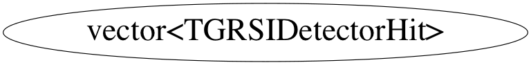

Function Members (Methods)
public:
Class Charts



Function documentation
const_reference operator[](vector<TGRSIDetectorHit,allocator<TGRSIDetectorHit> >::size_type n) const
reference operator[](vector<TGRSIDetectorHit,allocator<TGRSIDetectorHit> >::size_type n) const
friend iterator operator+(difference_type _Off, const iterator& _Right);
iterator operator=(const vector<TGRSIDetectorHit,allocator<TGRSIDetectorHit> >& x)
reference at(vector<TGRSIDetectorHit,allocator<TGRSIDetectorHit> >::size_type n)
friend random_access_iterator_tag iterator_category(vector::reverse_iterator& x);
const_reference at(vector<TGRSIDetectorHit,allocator<TGRSIDetectorHit> >::size_type n) const
iterator begin(void)
iterator end(void)
reverse_iterator rbegin(void)
reverse_iterator rend(void)
size_type max_size(void)
void resize(vector<TGRSIDetectorHit,allocator<TGRSIDetectorHit> >::size_type sz)
void resize(vector<TGRSIDetectorHit,allocator<TGRSIDetectorHit> >::size_type sz, TGRSIDetectorHit c)
size_type capacity(void)
bool empty(void)
void reserve(vector<TGRSIDetectorHit,allocator<TGRSIDetectorHit> >::size_type n)
T& front(void)
T& back(void)
void push_back(const TGRSIDetectorHit& x)
void swap(vector<TGRSIDetectorHit,allocator<TGRSIDetectorHit> >& x)
iterator insert(vector<TGRSIDetectorHit,allocator<TGRSIDetectorHit> >::iterator position, const TGRSIDetectorHit& x)
void insert(iterator position,const_iterator first,const_iterator last)
void insert(iterator position,size_type n,const T& x)
void pop_back(void)
void erase(vector<TGRSIDetectorHit,allocator<TGRSIDetectorHit> >::iterator position)
void erase(vector<TGRSIDetectorHit,allocator<TGRSIDetectorHit> >::iterator first, vector<TGRSIDetectorHit,allocator<TGRSIDetectorHit> >::iterator last)
void clear()